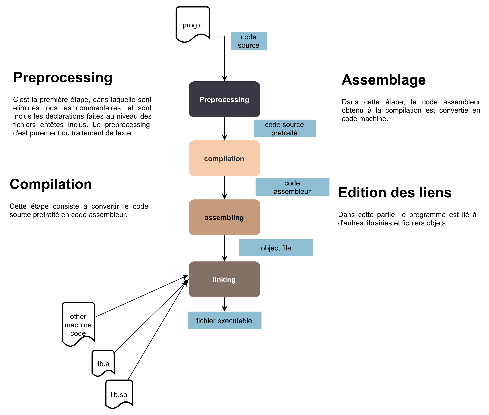
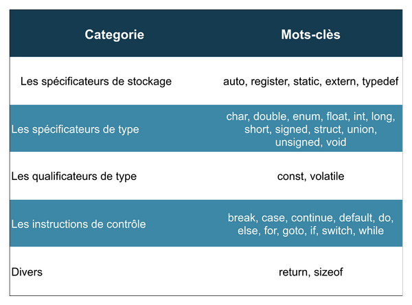
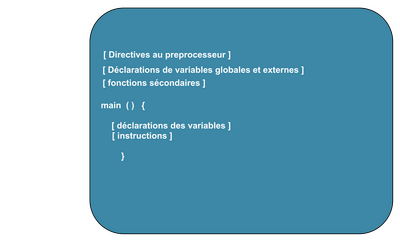

Langage de programmation C
Introduction
Historique du Langage de programmation C
- Le langage C a été conçu en 1972 par Dennis Ritchie et Ken Thompson (en ce temps chercheurs aux Bell Labs). Il a été conçu dans le but de développer le système d'exploitation UNIX.
- En 1983 L'ANSI décide de normaliser le langage, ce qui a conduit à la norme ANSI C en 1989. En 1990, cette même norme fut reprise par l'ISO.
La compilation et interpretation
- La compilation consiste à traduire un code en un autre code équivalent. les programmes chargés de faire cela, sont appélés des compilateurs.
- L'interpretation:
- En C la compilation est faite en 4 phases (reference Programmation en langage C de Anne CANTEAUT):
- Le traitement par le préprocesseur : le fichier source est analysé par le préprocesseur qui effectue des transformations purement textuelles (remplacement de chaı̂nes de caractères, inclusion d’autres fichiers source . . . ).
- La compilation : la compilation proprement dite traduit le fichier généré par le préprocesseur en assembleur, c’est-à-dire en une suite d’instructions du microprocesseur qui utilisent des mnémoniques rendant la lecture possible.
- L’assemblage: cette opération transforme le code assembleur en un fichier binaire, c’est-à-dire en instructions directement compréhensibles par le processeur. Généralement, la compilation et l’assemblage se font dans la foulée, sauf si l’on spécifie explicitement que l’on veut le code assembleur. Le fichier produit par l’assemblage est appelé fichier objet.
- L’édition de liens : un programme est souvent séparé en plusieurs fichiers source, pour des raisons de clarté mais aussi parce qu’il fait généralement appel à des librairies de fonctions standard déjà écrites. Une fois chaque code source assemblé, il faut donc lier entre eux les différents fichiers objets. L’édition de liens produit alors un fichier dit exécutable. 
- Les différents types de fichiers utilisés lors de la compilation sont distingués par leur suffixe. Les fichiers source sont suffixés par .c, les fichiers prétraités par le préprocesseur par .i, les fichiers assembleur par .s, et les fichiers objet par .o. Les fichiers correspondant aux librairies pré-compilés ont pour suffixe .a.
- Les compilateurs disponibles pour le langage:
- gcc du projet GNU (utilise ici comme compilateur)
Bases de la programmation C
Les composants élémentaires du C
Tout programme C est constitué par les composants élémentaires.
- Les identificateurs: Ils permettent de nommer et d'identifier un objet manipulés par le programme. Ces objets de programmation sont : les variables de tout type, les fonctions. Le premier caractère d'un identificateur ne doit être ni un chiffre, ni un caractère spécial (%, #, ? * etc). La limite du nombre de caractère que peut comporter un identificateur dépend des implémentations, mais elle est toujours supérieur à 31 caractères.
- Les mots-clès: Ce sont des mots reservés au langage. Ils constituent en quelque sorte le vocabulaire du langage. Ils ne peuvent pas être utilisé comme identificateurs. (nom propre vs vocabulaire français). 
- Les commentaires:
- Les commentaires sur une ligne: //
- Les commentaires sur plusieurs: /**/
- Les constantes
- Les chaînes de caractères
- Les opérateurs
- Les signes de ponctuation
Structure d'un programme
Le programme se structure comme suit:

Les types en C
Les opérateurs
Les structures de contrôle
Les fonctions d'entrées-sorties classiques
Les types composés
Les pointeurs
Les fonctions
- Les fonctions permettent de :
- Reduire la duplication de code
- Décomposer une tâche complexe en des petites tâches
- Rendre le code plus lisible, facile à tester, et réutisable
- Cacher les détails de l'implementation